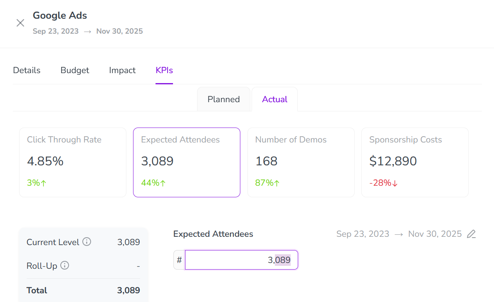
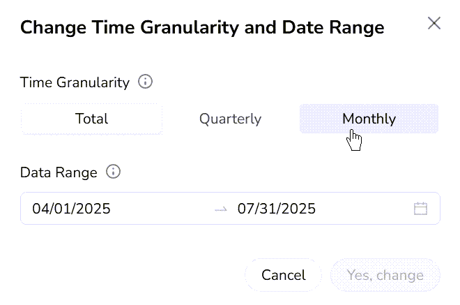
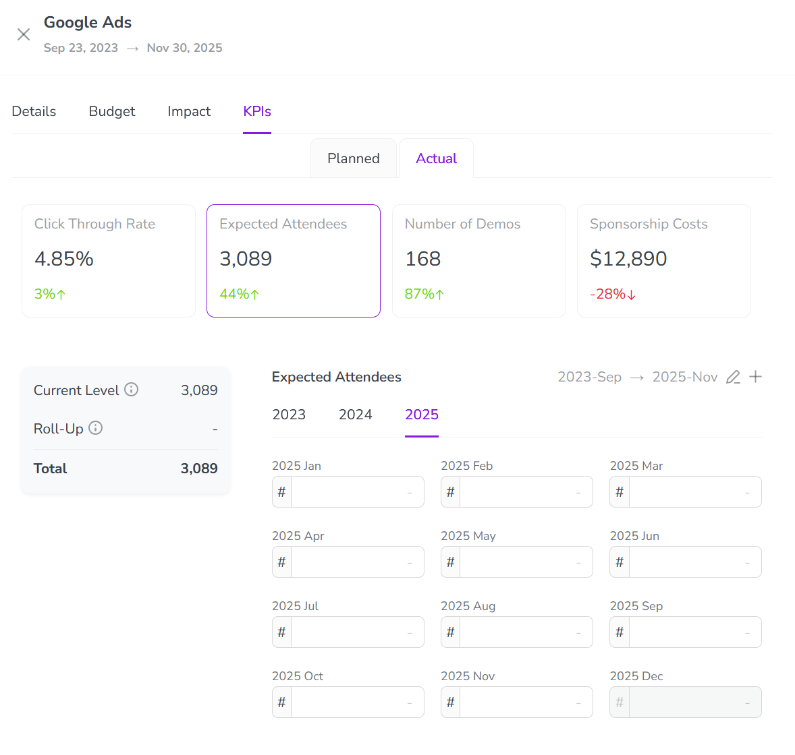

Track and analyze KPIs
In Uptempo Campaign Management, Key Performance Indicators (KPIs) help you to define how success is measured for the activities in your marketing plan beyond the demand generation funnel. Use KPIs to plan and track operational metrics like engagement and conversion, and gain visibility into execution quality and progress toward planned outcomes.
You can use KPIs to:
Evaluate performance: Compare actual impressions against planned values to quickly assess if your campaign is meeting its objectives.
Inform resource allocation: Identify which activities are delivering the best results and adjust your budget accordingly.
Analyze trends: Track monthly performance patterns for your campaign, noting which months performed best to inform future planning.
Report on performance: Use the clear visual indicators to quickly build executive reports showing campaign success rates across your marketing portfolio.
How KPIs work
KPIs are specific to activity types. For each activity, you set targets for the KPIs assigned to activities of that type during the planning phase. During the execution phase, you can enter actual KPI results for the same activities. By comparing targets and results in real time, you can quickly see what’s working and what’s not, so that you can make informed decisions about how to adjust your strategy.
You can enter KPI data for planned targets and actual results at any level of your activity hierarchy. All KPI data automatically aggregates up to the top of the activity hierarchy along hierarchy paths, so you can get full insight into performance at every level of your marketing plan.
View activity KPI data
For each activity, you can see the KPIs assigned to activities of that type, in the KPIs section of the activity's details panel. Here, you can view existing KPI data, as well as enter KPI target and result data.
View an activity's KPIs
In the
 Activities section, click on the activity for which you want to view KPIs. The activity's details panel opens.
Activities section, click on the activity for which you want to view KPIs. The activity's details panel opens.In the details panel, click the KPIs section to open it.
The KPIs section contains two tabs:
- Planned
Use this tab to enter and view planned targets for the KPIs assigned to the activity type.
- Actual
Use this tab to enter and view actual results for the KPIs assigned to the activity type, and compare them to the planned targets.
Planned KPI targets
You enter the target results that you plan to achieve for each KPI in the Planned tab of an activity's KPIs section.
KPIs shown in the Planned tab are organized into sections. Depending on the activity's position in the hierarchy, up to three sections are shown:
- Higher Levels
This section displays KPI target data set on activities that are above the current activity in the hierarchy (ancestors). This section is only shown if there is KPI target data at higher levels. For KPIs to be displayed here, the KPIs must also be assigned to type of activity you're currently viewing.
- Active Level
This section displays KPI target data for the activity you're currently viewing, and is always visible. You enter KPI data for the current activity in this section.
- Lower Levels
This section displays aggregated KPI target data set on activities that are below the current activity in the hierarchy (descendants). This section is only shown if there is KPI target data at lower levels. For KPIs to be displayed here, the KPIs must also be assigned to type of activity you're currently viewing.
Enter planned KPI targets for an activity
In the
Activities section, click on the activity for which you want to enter planned KPI targets. The activity's details panel opens.In the details panel, click the KPIs section.
Click the Planned tab.
Click the Active Level section to expand it.
Enter the target values you plan to achieve into each KPI's field.
Optional: To view KPI target values set at other levels, click the Higher Levels and Lower Levels sections to expand them (if shown).
Click anywhere outside a KPI's input field to stop editing it.
The KPI target values you enter are saved automatically.
Actual KPI results
You enter the actual results achieved for each KPI in the Actual tab of an activity's KPIs section. After you enter actual results for a KPI, Uptempo automatically displays a comparison to the KPI's planned target, so you can see at a glance how the activity performed.
Enter and compare actual KPI results for an activity
In the
Activities section, click on the activity for which you want to enter actual KPI data. The activity's details panel opens.In the details panel, click the KPIs section.
Click the Actual tab.
Click on the KPI for which you want to enter actual results. The KPI's input field is displayed:

Enter actual results for the KPI into the input field.
Click anywhere outside the KPI's input field to stop editing it. The KPI actual values you enter are saved automatically.
After you enter an actual result for a KPI, the KPI's field in the Actual tab displays a percentage comparison to the KPI's planned value:
The comparison figure is color-coded based on whether the result exceeds the target (green) or is underperforming (red).
Place the pointer on the comparison to see the planned value.


When you enter actual results for a KPI, you can choose whether you want to enter and display actual results as a single period for a selected date range, or broken down by quarter or month/period.
Change time granularity and date range for actual results
On the Actual tab of the KPIs section, click on the KPI for which you want to enter actual results.
Click
 Edit by the displayed date range. The Change Time Granularity and Date Range dialog opens:
Edit by the displayed date range. The Change Time Granularity and Date Range dialog opens: 
Select the Time Granularity option you want to use:
- Total
Enter and display a single results value for the selected date range.
- Quarterly
Enter and display separate results values for each quarter in the selected date range.
- Monthly/Periodically
Enter and display separate results values for each month or period in the selected date range.
Optional: Use the Date Range field to adjust the date range for which you want to enter results values.
Click Change.
In the confirmation dialog, click Change to apply your changes.
The Actual tab of the KPIs section updates to show input fields according to the time granularity and date range you selected: 